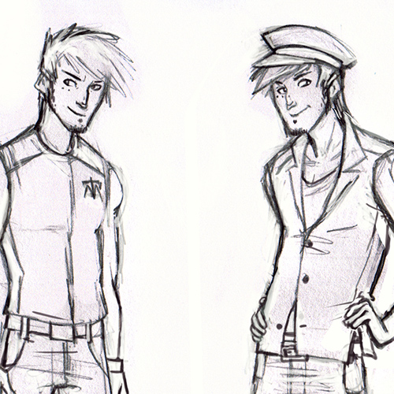
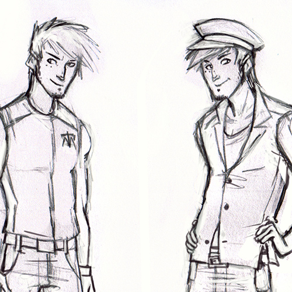

Monty 'Musi' Quintero
- Story: Goshin
- Age: 23
- Alignment: True neutral
- Gender: Cis male
- Orientation: Bisexual
- Physical appearance: Musi has light, and long brown hair. He is of thick build, not especially muscular but would perform well enough in a fight. He dresses casually, a light blouse and shorts as well as a mariner's cap will do. Musi is 6'1, he has two birth marks under one eye.
Musi has always been a mariner, his family has always lived at sea. Growing up, they had no property, they always lived on the dock. His father Archie still travels on the ocean, while Musi stayed behind doing odd jobs for Matrix. Musi didn't intend on working for them, but he needed cash and the organization needed a skilled sailor to get their people on the offshore island of Goshin. He doesn't get involved in much of the happenings of Matrix, but does need to bring captives to the island, to his great displeasure. Musi doesn't like it, but doesn't do much against it either, it's just how it is. He considers himself lucky to be where he is.
Of course, this all changes when he is permanently assigned to Goshin, and hired on as a full-time member given his skill with water types. Even when assigned sleeping quarters indoors, he goes back to sleep on his boat. Musi enjoys playing guitar on deck, and to sing, whether he's alone or in the company of others. He's a very relaxed guy, doesn't worry about much and finds good in everyone he meets.
Pokemon Team: Popeye (Wartortle)

 
